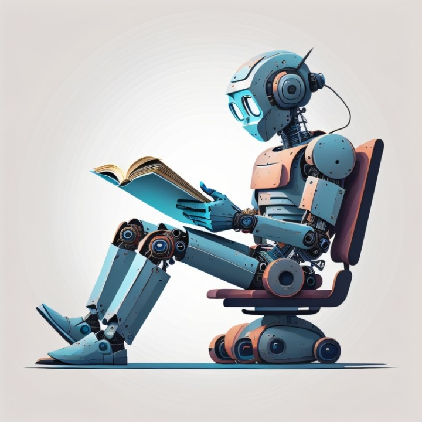

My Technical Interests
Artificial Intelligence

The fields of machine learning and artificial intelligence captivate me with their transformative potential. I am especially intrigued by how intelligent systems can tackle complex problems and enhance decision-making processes across diverse domains.
My aspiration is to delve deeply into various AI disciplines, such as machine learning algorithms, neural networks, and their practical applications in addressing real-world challenges. Through this exploration, I aim to contribute to innovative solutions that make a meaningful impact.
Robotics
As a IT student, I am driven by a passion for developing intelligent systems that bridge the gap between advanced technology and practical problem-solving. My academic journey has focused on mastering key disciplines including robotic design, machine learning algorithms, and embedded systems programming.
I am particularly fascinated by autonomous robotics and AI integration, with hands-on experience in developing robotic prototypes that demonstrate complex sensor integration and adaptive control systems. My projects have ranged from designing a navigation algorithm for a mobile robot to implementing computer vision techniques for object recognition and tracking.